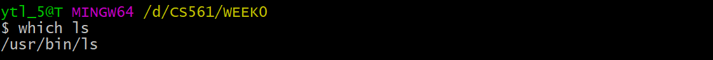

Bash Commands⚓︎
Use this sheet to test yourself! Click the box for unfolding.

ls⚓︎
ls
Check the components in the current directory.

ls -a
Check the components in the current directory; with hidden components.

ls -l
Check the components in the current directory; with detailed information. The authority meaning of the first column:

cd⚓︎
cd
(default) Go back to root directory

cd ~
Go to the root directory

cd .
Go to the present working directory.

cd ..
Go to the parent directory.

pwd⚓︎
pwd
Present working directory.

grep⚓︎
grep
Search a string in a given file.

grep -i
Search a string in the file directory, with case-insensitive. The output will mix both up & low -case results.
The case below will search: What, WhaT, wHAt, wHat, .etc.

grep -r
Search a string from all files in the current directory (or in a given file if send the parameter) and in all of its subdirectories.
chmod⚓︎
chmod
Set authority for the given file.
Note that: there are two ways to use chmod. For example, chmod 644 <filename> and chmod u+rw <filename>

| Person | user | group | other |
|---|---|---|---|
| Decimal | 6 | 4 | 4 |
| Binary | 110 | 100 | 100 |
| Meaning | rwx | rwx | rwx |
| Person | u | g | o |
|---|---|---|---|
| Meaning | user | group | other |
| Verb | + | - |
|---|---|---|
| Meaning | add | remove |
| Behavior | r | w | x |
|---|---|---|---|
| Meaning | read | write | excute |
find⚓︎
find . -name <filename>
Find file with the given name in the current directory.

history⚓︎
history
Check command using history.

Pip (|)⚓︎
| -- pip operator
Combine two or more commands.
e.g. I want to use history and grep ls in sequence. I use history | grep ls

Output Redirect (>)⚓︎
> -- output redirection operator
Redirect the contents of a command/file to another by overwriting it.
e.g.
I want to save the output of history | grep ls in the file output.log. I use history | grep ls > output.log.

cat⚓︎
cat
Print the content of a file onto the standard output stream.


man⚓︎
man
The function of man is like --help(in GitBash). It shows the manual pages for a command.
e.g. I want to check less command using manu:

more, less, most⚓︎
more, less, most
The three commands are used to view the text files in the command prompt, displaying one screen at a time in case the file is large (For example log files).
- Support
forward navigationandlimited backward navigation.
- Support both
forward navigationandbackward navigation. - Has
searchoptions. - Can go to the
beginningand theendof a file instantly. - Can switch to an
editor(like opening the file inviorvim).
It is noticeably quicker than editor when the file is large.
- Has
allthe features ofmoreandless. - Can also open
multiple files, close 1 file at a time when you have multiple files open. - Allows
lockingandscrollingof the open windows. - Allows for
splittingof open windows.
alias⚓︎
alias
Create a shortcut that references a command.
e.g. Create a shortcut for ls -la as ll: alias ll="ls -la"

unalias⚓︎
unalias
Remove alias.
Note
unalias not only remove the alias from the current session but also remove them permanently from shell's configuration file.
echo⚓︎
echo
A built-in Linux feature that prints out arguments as the standard output. Example see in PATH.
which⚓︎
which
Use to identify the location of executables.

PATH⚓︎
PATH display
By using echo $PATH.

PATH edit
Q: How to make scripts execute from the present working directory without having to type a ./ before the script's name (e.g. hello instead of ./hello)?
A: ./ executes files that are not in ${PATH}, “.” means it directly execute file in the current directory. Thus, we need to add hello’s absolute directory in ${PATH}, such as:
PATH DEFAULT=${PATH}:/path/to/helloln⚓︎
ln -s
Create a soft link for an existing file.

Background Processing (&)⚓︎
&
For example, launching Node.js using node app.js & vs. node app.js
Use the background process can help to keep the process running without terminal effects. However, a foreground process will be killed when we close the terminal.
code⚓︎
code
Open VS Code to edit some file.
source⚓︎
source
source is used to read and execute the content of a file (generally a set of commands) right now instead of relaunching the shell. Those commands are passed as an argument in the current shell script.
Let's create a .bash_profile in the root directory:
Then execute the file:

Oh no! All the dependencies have gone!

😆 Do not worry about it. Remove the code in .bash_profile and relaunch your shell. Then your shell will be brand new! (The theory see in next topic .bash_profile vs .bashrc).
There is another way to fix the problem: change export PATH=.: into export PATH=.:$PATH.
.bash_profile vs .bashrc⚓︎
.bash_profile v.s. .bashrc
When invoked, Bash reads and excutes commands from a set of startup files, which is read depending on whether shell (command explainer) is invoked as [interactive/non-interactive] or [login/non-login] shell.
| Shell type | interactive | non-interactive | login | non-login |
|---|---|---|---|---|
| Example | terminal (shell read, write) | non-terminal (execute a script) | remotely (via ssh) | locally |
For: Interactive log-in shell.
For: Interactive non-login shell.
Note!
The components you write in .bash_profile and .bashrc is just appending more works to the current default shell settings. It is not overlapping.
E.g. situations
- If you create an empty
.bash_profileand execute (usesource) immediately, it will make any changes to your shell's setting. - If you make any changes in
.bash_profileand execute it immediately, it will implement the changes in your shell. However, if you delete the code in.bash_profilefor the changes and restart shell, the shell will run as the original default.
Shebang (#!)⚓︎
#!
Bash commands can be used not only in command lines but also in scripts. The head of Bash script should mention using Bash shell with #!.
e.g: With #!/bin/bash, generate SHA hash for [A-Za-z0-9]:

How to run a bash script?
There are two ways to run a bash script:
-
Use
source. Source it immediately! -
Make it executable with
chmod 7xx <script_name>. Then run it in any way below. Let's assume the script is namedDonow:- Add script path into
PATH. Then Run it with script name. e.g.:$ Donow - Run relative path. e.g.:
$ ./Donow - Run absolute path. e.g.:
$ <Path_from_root>/Donow
- Add script path into
sha1sum⚓︎
sha1sum
sha1sum is a cryptographic hash function. The algorithm transfer data into Checksum, which is convenient for confirming if your copy is the same as the original one.

Created: December 4, 2022 23:35:51